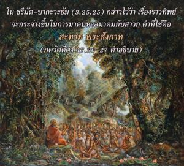

สัจธรรมที่สมบูรณ์คือ จุดมุ่งหมายของพิธีบูชาด้วยการอุทิศตนเสียสละและแสดงไว้ด้วยคำว่า สัท ผู้ปฏิบัติพิธีบูชาเช่นนี้เรียกว่า สัท เช่นกัน เหมือนกับงานทั้งหมดในพิธีบูชา การบำเพ็ญเพียร และการให้ทาน ซึ่งเป็นธรรมชาติที่สมบูรณ์โดยแท้จริง ปฏิบัติไปเพื่อให้องค์ภควานฺทรงพอพระทัย โอ้ โอรสพระนาง ปฺฤถา

คำว่า ปฺรศเสฺต กรฺมณิ หรือ “หน้าที่ที่กำหนดไว้” แสดงว่ามีกิจกรรมหลายอย่างที่อธิบายไว้ในวรรณกรรมพระเวทซึ่งเป็นวิธีการเพื่อความบริสุทธิ์ เริ่มจากจุดปฏิสนธิจนถึงจุดจบของชีวิต วิธีการเพื่อความบริสุทธิ์เหล่านี้ได้แนะนำให้กล่าวคำว่า โอํ ตตฺ สตฺ คำว่า สทฺ-ภาเว และ สาธุ-ภาเว แสดงถึงสถานภาพทิพย์ การปฏิบัติในกฺฤษฺณจิตสำนึกเรียกว่า สตฺตฺว ผู้ที่รู้สำนึกอย่างสมบูรณ์ในกิจกรรมแห่งกฺฤษฺณจิตสำนึกเรียกว่า สาธุ ใน ศฺรีมทฺ-ภาควตมฺ (3.25.25) กล่าวไว้ว่า เรื่องราวทิพย์จะกระจ่างขึ้นในการมาคบหาสมาคมกับสาวก คำที่ใช้คือ สตำ ปฺรสงฺคาตฺ หากปราศจากการคบหากัลยาณมิตรเราจะไม่สามารถบรรลุถึงความรู้ทิพย์ได้ เมื่อบุคคลได้รับการอุปสมบทหรือได้รับสายมงคลจะเปล่งคำว่า โอํ ตตฺ สตฺ ในทำนองเดียวกันการปฏิบัติ ยชฺญ ทั้งหมดจุดมุ่งหมายคือองค์ภควานฺ โอํ ตตฺ สตฺ คำว่า ตทฺ-อรฺถียมฺ ยังหมายถึงถวายการรับใช้ต่อทุกสิ่ง ซึ่งเป็นผู้แทนขององค์ภควานฺรวมทั้งการบริการรับใช้ เช่น การปรุงอาหาร ช่วยงานในวัดของพระองค์ หรืองานใดๆที่เผยแพร่พระบารมีของพระองค์ ดังนั้นคำสูงสุด โอํ ตตฺ สตฺ ใช้ในหลายๆทางเพื่อให้กิจกรรมทั้งหลายสมบูรณ์และทำให้ทุกสิ่งทุกอย่างบริบูรณ์